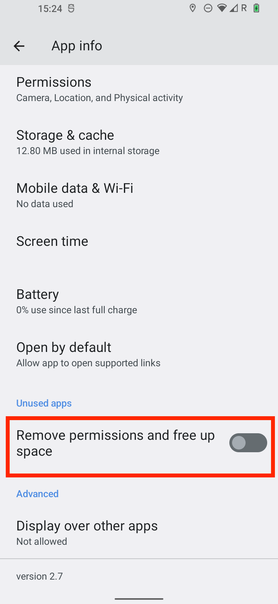

JTrack EMA¶
this app is available for Android and iOS operating Systems.
For Android version
For iOS version (check here)
General Settings¶
to Install this app first go to the Google Play Store on your Android phone.
{kind=link}
once the app is installed, Open the JTrack EMA+ App and click on Join study button. |

This app needs to access the camera for scanning Qr-code. Thereby, accept the permission according to the following image.

Now you can scan the provided Qr-code using your device camera.
Important
(for more information about Qr-code and how to generate them please see…)
Once the logging is successful, you will see the following screen, which asks you to go to the app settings page and change the settings according to the following steps:
{kind=link}
now look for “battery optimization” and select it |

then select the “Unrestricted” option according to the below image, This step will guarantee that the JTrack Social app will not be restricted by the phone application system (Android). |

Now go back to “app info” page and scroll to find “Remove permission and free up space”, and make sure that it’s disabled. |
{kind=link}
Now the main setting of the JTrack EMA+ application is done, and